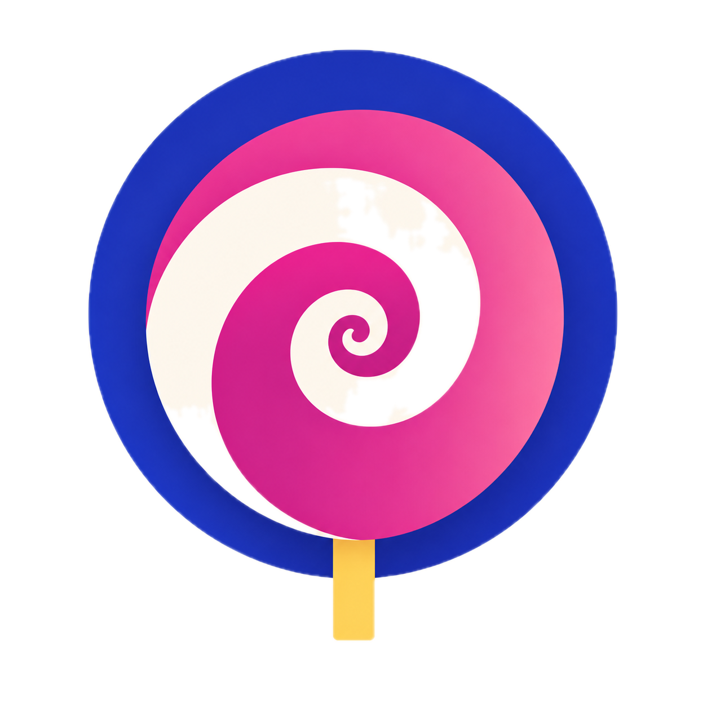

Face check
Pulse, breathing & recovery
Same Home (direction A). The only difference is where the settings control sits. There is no fourth tab. The control opens one sheet: Apple Health, units (lb / in), reminders, account, your data, about. Below, a third frame shows that sheet so the two placements are judged against what they open.
